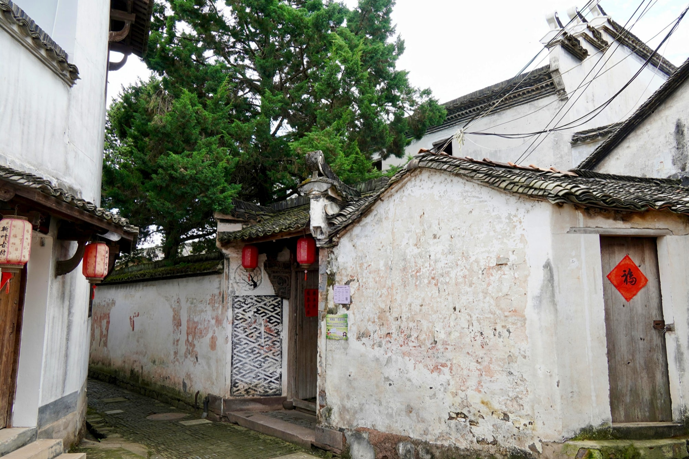
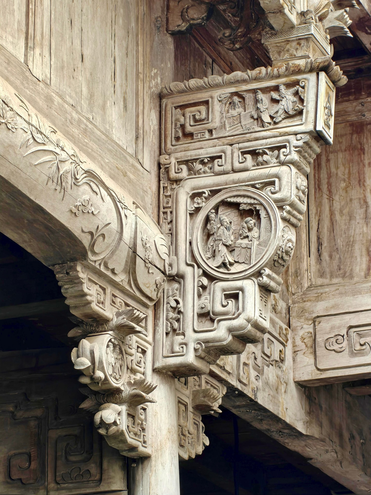
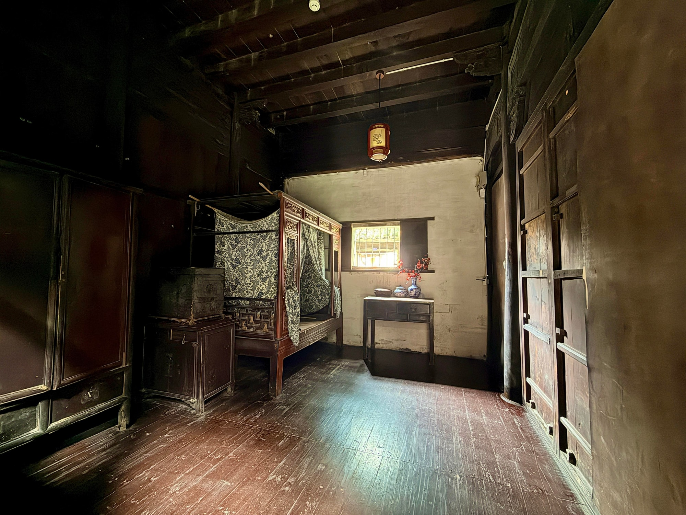

国保传统民居
深宅静巷，寻常好景双美堂
双美堂是新叶村保存较为完整的一处清代宅院。与宗祠不同，它保留的是传统家庭居住空间，为游客理解古村民居提供了另一种视角。
01
《爸爸去哪儿》来过的院子
2014年，综艺节目《爸爸去哪儿》曾在新叶村拍摄，双美堂是节目中一位嘉宾与孩子暂住的院落，也因此为更多游客所知。今天厅内陈列着圆桌、座椅、条案与中堂字画，呈现出传统宅院正厅的空间层次。
02
院中相对的两棵树

双美堂的院子里，两侧各种着一棵树。相传是当年修缮宅院时，主人和同村好友一起栽下的。如今枝叶越过墙头，从窄巷中抬头便能望见，为这座深宅添了几分生气。
03
梁枋上的精雕细刻

双美堂的木构雕饰在民居中颇为丰富。梁枋、雀替之间分布着人物、花鸟与回纹等纹样，构图繁密而有层次，集中展现了传统木作在结构构件上的装饰手法。
04
厢房里的居住尺度

宅院深处的厢房里陈列着雕花架子床、木箱、条案与器物。与正厅的公共性不同，这处较小的房间呈现传统宅院居住空间的尺度，也让游客理解厅堂与厢房承担的不同作用。